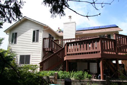

This Saturday you can take part in the American Solar EnergySociety's NationalSolar Tour. Attending a local tour as part of this nationalevent is an easy way to show your support for renewable energy anda fun opportunity to learn more about home-scale solar, wind andgeothermal systems as well as other green building options.
The official 2007 tour date is Saturday, Oct. 6, although sometours take place as early as September and others as late asNovember. Tours are scheduled in dozens of locations across theUnited States, including 46 states and Puerto Rico. You can viewthe full listhere.
I've been on my city's tour three times now (this doesn't getrepetitive because the homes vary from year to year), and myfavorite part is hearing homeowners explain their various projects.Most are eager to tell all the details, whether it's how theyrigged up a single solar panel to run a few lights inside thehouse, how well that solar heater or wind turbine really works, orexactly how their house saves energy.
Not only that, but it's inspiring to see what individual peoplecan accomplish. After all, if they can do it, why can't you?
View Photos of the Homes on the SolarTour!
We have a new community photo gallery atcu.MotherEarthNews.com,and we've created a special section for the National Solar Tour sonow you can see these homes year-round. To check out homes fromlocal tours across the country,click here.
|
 Visit and learn about solar homes like this one on the 2007 National Solar Tour. |
|
|